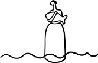

Yazmanın sadece ya da temelde "yaratmak" anlamına geldiğini sanmak hayli nahifçe bir yanılgı. Yazmak aynı zamanda "yıkmak" demektir. Yaratmak kadar yıkmak da yazıya içkindir. İlle de her zaman insana bir şeyler katmaz, kazandırmaz yazı. Öyle zamanlar var ki verebileceğinden çok daha fazlasını talep eder senden. Vermezsen eğer, arsızlaşır, zorla alır ellerinden, benliğinden. Eksiltir çoğalttığı kadar. Parçalar bütünleştirirken dahi. Çekip alıverir ayaklarının altından dünyayı. Bir bakarsın boşluktasın, salınıyorsun, sarkaç misali.
Sarkaç
bir ağulu salınım
asla bir bütüne tamamlanmayan,
kendine kavuştuğunda dahi, bir öte Ben'e hasret kalan.
Boşluk ürkütür çünkü bilinmeyene gebedir. Ne yön duygusu vardır orada, ne de sakınılacak bir dip ya da tırmanılacak bir zirve. Yazı seni içine çekip yutmuşsa eğer, yani tamamıyla erimişse bilincin ve benliğin harflerin kazanında, artık o noktadan itibaren çıksan da bir düşsen de. Döner dolaşır kendini yitirirsin başlangıç noktanı bulmayı umduğun yerde. Boşluk dediğin evvela kendinle yüzleştirir seni, hiç görmek istemediğin ya da belki de varlığından dahi haberdar olmadığın hallerinle. Sonra tutar daha da beterini yapar. Sızar içine damla damla, kaplar içini. Boşluk artık dışında değil, sen artık boşluğun içinde değil, boşluk senin içindedir.
Uçurumun kenarında durmuş düşünürken yazacağın kelimeyle atacağın adımı, yani aslında sorarken kendi kendine yazamadığın takdirde aşağıya düşmenin nasıl da korkutucu olacağını, yazı tutar çok daha da beterini sunar sana, seçeneğin varmışçasına. Uçurumu yutarsın yazdıkça.
Dil dipsiz bir boşluk oluverir o zaman, yudum yudum alırsın içine. Simyası kimyana karışır. Düşmekten de ürkütücüdür uçurumu yutmak, uçurum olmak. İçinde, damarlarında, beyninin kıvrımlarında o dipsiz boşlukla yaşamak... günbegün... senebesene... hayatbehayat... Yazabilmek için benliğinin evinde ne var ne yoksa çıkartıp atmayı göze almak zorundasın. Mahremiyetini yitirmeye ve mahrumiyete hazır olmalısın. Sen daha iyi saklanabilmek için hikâyeler kurar, karakterler yaratırsın ama o sayfaların aralığından gene de gözetlenen sen olursun. Ne bir zırh ne bir kadife örtü. Çırılçıplak ve korunaksız. Bir bakarsın ki meğer ne de yaralı, nasıl da sakatmışsın.
Boşluk risklidir çünkü bildiğin o güvenli koylara, sığ sulara benzemez zerre kadar. Attığın her adımda bu ritme alışacağın yerde, tam tersine, artar yabancılığın, artar aldığın risk. Edebiyatta ustalık mertebesi yoktur. Yazdıkça kolaylaşmaz yazı. Her hikâyeyle yeniden ve yeniden uzaklaşırsın korunaklı varoluş âleminden; gece vakti yola çıkmış bir gezgin ya da zoraki sürgün gibi uzaktan özlemle bakarsın vaktiyle yaşadığın sakin kasabanın ışıklarına. Her yazı öncesi veda edersin o ölgün ışıklara. Uzaklaşırsın. Yol seni nereye götürürse. Yazı seni nereye sürüklerse. Burnunda bir sızı. Ne de olsa her yolculuk geri dönememe ihtimalini taşır bağrında. Her roman yazarını tehdit eder, önce başlayamamakla, ardından bitirememekle. Roman palazlandıkça, romancı kan kaybedip zayıflar. "Seni" der hikâye, suratında gaddar bir tebessümle, "alır ve yoğurur, sil baştan biçimlendirir ve hatta silebilirim satır satır." Yazmak, tanıdık ama bir o kadar yabani, yabancı bir bedenle sevişmektir ve her sevişmede olduğu gibi burada da dişil olan katbekat kudretlenmiş olarak muzaffer kalkar yataktan. Yazarın cinsiyeti ne olursa olsun, yazı dişildir her zaman.
Bu bir girdap. Çıkamama ihtimalin de var oradan. Nihayet bir çıkış yolu bulduğunda ise, gene de fazla sevinme, zira bir daha aynı olamayabilirsin. Bu bir büyü, büyüledikleriyle beraber büyücüsünü de kalıcı dönüşümlere uğratabilen. Kazanın içinde muhtevası belirsiz bir sıvı, fokur fokur. Kepçe sende olabilir ama sanma ki efendi sensin; son tahlilde o kendi kendini karıştırır. En nihayetinde yazıdır muktedir olan. Okuru da, yazarı da büyüleyen.
Yazmaya başlamadan evvel bir vaat ya da umut kırıntısı duymak ister yazar. Başaracağına, kotaracağına ve bu sayede bir şeyleri değiştireceğine dair. Bir deniz feneri uzaktan ışıldayan, kayalıklarda parçalanmayacağını muştulayan. Ne de olsa yazıyı kat üstüne kat, nam üstüne nam, kazanım üstüne kazanım olarak görmek isteyen kalemşorlar da var. Kafası pek de karışık olmayan, kişiliklerinin damı akmayan, düz yolda yalpalamayan ve en nihayetinde edebiyattan ziyade mühendisliğe, vecd halinden ziyade hesap kitap işine yakın duran, yatkın olan yazarlar. Onlar da var edebiyatın damar damar yollar çizdiği bu haritanın içinde.
Oysa kimsecikler garanti edemez çabalarının sonunda mutlu sona kavuşacağını. Gökten düşen elmalar yok edebiyatta, ne de çıkılacak bir kerevet. Gün batımına, hikâye tamamına ve kitap okuruna erdiğinde belki de koca bir HİÇLİK elimizde kalan. Belki de o hiçlikten ölesiye korktuğumuz için sarılıyoruz yeniden satırlara, yeni bir kitaba.
Budur her kitabın yazarına sorduğu ilk soru: Yaratım kadar yıkıma da hazır mısın? Yıkmaya ve yıkılmaya... Med ile cezir arasında soluklanmaya... soluksuz kalmaya... Hazır değilsen hiç başlama bu kitabı yazmaya daha iyi. Bırak yarım kalsın bu proje de, ömrü hayatın boyunca yarım kalmış nice projeler arasında.
Yazdığı her romanla bir öncekini siler romancı, tıpkı yaşadığı her yeni aşkta bir önceki sevgilinin izlerini silebileceğini zanneden âşıklar gibi. Gene de izler kalır geriye. Silgi ile kalemin biteviye mücadelesidir yazıyı besleyen. Yazmak kadar silmek de daimi bir yakıt edebiyatçıyı var eden. Salt yazar için değil okur için de geçerli aynı edebi devridaim. Budur her kitabın okuruna sorduğu ilk soru: Yaratım kadar yıkıma da hazır mısın? Yıkmaya ve yıkılmaya... Med ile cezir arasında soluklanmaya... soluksuz kalmaya... Hazır değilsen hiç başlama bu kitabı okumaya daha iyi. Bırak yarım kalsın bu proje de, ömrü hayatın boyunca yarım kalmış nice projeler arasında.
Bu bir med-cezir. Zıtlıklar arasında düzensiz atan bir kalp. Uykularımda dahi duyuyorum ritmini. İki mevsim var hayatımda: Roman yazma mevsimi ve romandan arınma mevsimi. Ne vakit ruh halimin ibresi birincisine yönelse yeni bir romana başlıyorum demektir. Yazı mevsimi toprağın uykudan uyandığı, ağaçların meyveye durduğu zaman. Ama sizi yanıltmasın, bahar değil bu, hani güneşli günleri muştulayan. Kasvet ve endişe, evham ve kâbus topluyorum hikâye ağaçlarının dallarından. Her bir hikâye beraberinde dikenleriyle geliyor. Bu bir Vakvak Ağacı, ulu ve görkemli bir ağaç, dallarında ölü canlar taşıyan. Gene de meyvelerini koparmaktan kendimi alamıyorum. Seneler var ki her yazı mevsiminde ben salt yazı soluyor, yazı konuşuyor, yazı görüyorum. Ne gecem kalıyor, ne gündüzüm; ne dünyevi kalıyor ne uhrevi. Zaman dediğin bir daimi an'dan ibaret sadece. Dem bu dem. Dem bu dem. Dem...
Yazmak Tanrılaşmaktır. Tanrı kadar yalnızlaşmaktır.
Kitap yalnızlık ister. Yazarından da okurundan da.
Kim bilir belki de son tahlilde yana yakıla aradığım şey tek bir kelimedir. O kelimeyi bulana kadar yazıyor, yazıyorum. Kabalacı bir mistik kadar düşkünüm, vurgunum, hayranım harflere. Bazen bana öyle geliyor ki sırf harflerin tılsımına kapıldığım için yazıyorum aslında. Az sayıda harfin yerlerini değiştirerek bitimsiz manalar elde etmek mucize gibi geliyor bana. Hani "bir nokta gözü kör edermiş". Kitabın değil, noktanın peşindeyim. Noktadan sadece hikâyeler değil sessizlikler de devşiriyorum avuç avuç. Sadece kendilerinden bahsedenlerin fitili çabuk tükenir. Romancı anlatmasını bildiği kadar susup dinlemesini de bilmek durumunda. O mucizenin hatırına, kulak ve gönül veriyorum harflerin ritmine. Kâh Türkçe kâh İngilizce yazmam iki apayrı alanmış gibi görünse de kimilerine, benim nezdimde, sadece ve sadece harflere olan aşkım var ikisinin de temelinde.
Her harfin birden fazla sesi, yazının da bir müziği var. Barışçıl bir müzik değil bu. Ne de öyle sakin ve uyumlu. Parçalayan, meydan okuyan bir hali var harflerin. Onlarla beraber ben de parçalanıyor, ben de noktalarıma ayrılıyor, ben de meydan okuyorum.
Sonra bitiyor roman, diniyor müzik, geriye sadece bir derin nefes veriş kalıyor. O sessizlikte birdenbire farkına varıyorum ne çok uzaklaşmışım normalliğin kalıplarından. Bir telaşla yeniden sosyalleşmeye ve normalleşmeye başlıyorum. Yaralarını yalaya yalaya iyi eden kediler gibi ben de yazının bedenime ve ruhuma verdiği hasarı tamire girişiyorum. Romandan arınma mevsimi "restorasyon" dönemi demek. Daimi bir inşaat içimde, yıkılan yerleri onarma gayretiyle. Takip eden aylar boyunca tamamladığım romanı mümkün mertebe düşünmüyor, bünyemden atmaya çalışıyorum. Öylesine kök salmış ki içimde, zaman alıyor kurtulmak gölgesinden. Sonra uzaktan, vaktiyle kalbini kıran eski bir dosta şimdi yeniden göz kırparcasına, yarı sitem yarı sevgiyle bakabilmek yeniden yazdıklarına...
Uzun zaman med-ceziri görmezden gelmeye çalıştım. Yok sayarsam yok olacağını umarak. Gitmedi. Eksilmedi. Dinmedi. Med-ceziri dinlemeyi öğrenmek, dilini çözmek hayli vakit ve emek aldı. En nihayetinde, işittim ve itaat ettim. Anladım ki kişiliğimin ve yazın sergüzeştimin ayrılmaz parçasıymış. Anladım ki,
Doğu/Batı, ego/hiçlik, aidiyet/yersizlik, ölümsüzlük arzusu/fanilik bilinci, görülmek/saklanmak, ifşa/mahremiyet, hafıza kaybına direnmek/geçmişin tahakkümüne direnmek, kadınlık/cinsiyetler ötesilik, agnostisizm/mistisizm, inançsızlık/iman, yazarak var etmek/ yazarak bir önceki beni satır satır silmek, diyalektik materyalizm/diyalektik materyalizm... iki zıt uç arasında gitti geldi kişiliğimin de yazımın da sarkacı senebesene. Uçlar arasında ne zaman seçim yapmaya kalksam, seçim yapmaya zorlansam aklım kapının dışında kalan, dışlanan uçta kaldı. Daimi bir eksiklik hissi.
Tasavvuf ve aşk ve yazı... üçünün de özünde aşkınlık var. Kendinden öteye ulaşma arzusu, bir öte benlik arayışı.
Med-cezir kıymetli kelime bireysel sözlüğümde, kelimeden öte bir nevi kimyasal madde damarlarımda dolaşan, ben bilsem de bilmesem de. Zehirim de o, panzehirim de. Bu kitaba med-cezir demem, onu bu isimle çağırmam işte bu sebepten.
Arizona-İstanbul